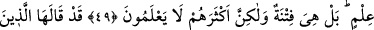

GÖKLERİN VE YERİN
HÜKÜMRANLIĞI
O’NUNDUR
42. Allah, ölenin ölüm zamanı gelince, ölmeyenin de uykusunda iken canlarını alır
da ölümüne hükmettiği canı alır, ötekini muayyen bir vakte kadar bırakır. Şüphe
yok ki, bunda iyi düşünecek bir kavim için ibretler vardır.
43. Yoksa onlar Allah’tan başkasını şefâatçiler mi edindiler? De ki: Onlar hiçbir
şeye güç yetiremezler ve akıl erdiremezlerse de mi (şefaatçi edineceksiniz)?
44. De ki: Bütün şefâat Allah’ındır. Göklerin ve yerin hükümranlığı O’nundur.
Sonra O’na döndürüleceksiniz.